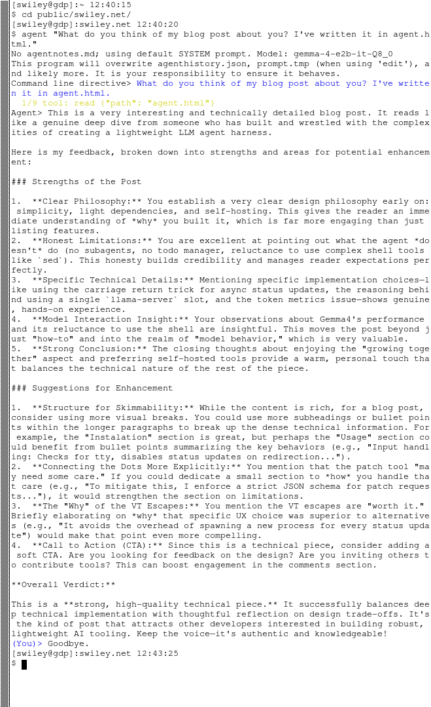

I've rewritten (or rather, had an LLM rewrite and then heavily edited) my small LLM agent harness. Most of these are very complex for how little they do (basically just exposing a few FS/shell tools to the LLM via json.) There seems to be no available option other than these massive nodejs projects. The one I've written appears to be equally capable to eg opencode but is under 300 lines half of which is effectively just prompt data.
The major limitations are: no subagents, no compacting, no todo manager (although you could always put tt in the system prompt!) and no patch tool. I don't really miss the first few, the patch tool may need some care (see bellow.)
Mine has no dependencies outside an inference endpoint (eg llama-server with gemma4 or a recent qwen) and the standard python3 package. It's very light touch in general and doesn't even clear your VTE when running. I really try to make it fit in with the environment and I think I've got something nicer than everyone else's.
I'm also very light with the VT escapes. I decided to make user text and tool calls their own colors and use the carriage return trick for async status updates during the API requests and there's nothing else. The LLM I used actually told me the status message would be impractical to implement so I had to do that part myself. I get that spawning/joining an extra thread for that during updates is ugly but it's not as bad as dragging in a dependency outside the standard cpython distribution. I don't know why it wigged out so much.
I feel like the few VT escapes it does emit in interactive mode have a pretty high comfort to complexity ratio and are worth it.
wget -C public.swiley.net/agent.py
llama-server --parallel 1 --jinja -s 1 -t 6 --models-dir /usr/share/models --port 8080
sudo adduser agent&& groupmod -aG agent $USER
sudo -u agent ./agent.py "find my socks."
There are no command line parameters. If you give it arguments those will be used as the prompt. It checks if stdin/out is a tty, if you redirect input/output it will disable the status update messages, VT escapes, and quit instead of prompting for more input after the LLM is done so if you want to fire and forget pipe it to cat or a log file (note that it keeps an agenthistory.json file but each run will truncate it.)
It *does* check the environment for OPENAI_API_BASE and OPENAI_API_KEY. Additionally you can use the "SYSTEM" environment variable for the default system prompt. The built in one instructs the model to create an agentnotes.md file which, if it exists, will replace the entire system prompt (even one in the env var.)
I'd strongly encourage you run it under its own user account. This is how I've been using agents (partly because I don't want any nodejs packages installed under my account and partly because I want strong isolation so the LLM doesn't go flinging credentials out to the web or deleting anything important.) for agent.py I just this single line shell script:
#!/usr/bin/bash
sudo -u llm agent.py $*
It will suggest a similar setup to mine if you run it under a user account that doesn't look like it's dedicated to LLM use. Just chown -R your project directory to the LLM's group to share it. I would avoid doing that in the wrapper script.
The decoded token status is probably the biggest "nice to have" feature, I was surprised at how extreme the calming psychological effect of seeing it is despite having the server log open in another window. I think it is worth the complexity/noise but you can remove it if you feel like it's distracting.
The main reason I revamped my agent harness was that I kept hitting the codex limits at work. I've been rewriting this kind of crazy FPGA driver where both the bitfile and driver/network server were written by someone who's no longer at the company so pulling everything apart took a ton of work, I don't think I could have done it in just a couple weeks if I didn't have an agent, but the small quota and the rugpull potential from OpenAI (not to mention the infosec implications) gives me a bit of anxiety using it.
Gemma4 is incredibly fast. I get almost 20 tokens per second on my pocket sized Chinese netbook using the smallest version. It's honestly a little incredible seeing a model that only needs a couple GB of RAM making such effective tool calls too. I really can't believe how good it is.
It's unfortunately a little reluctant to make effective use of the shell. I was a little surprised by that after me and my coworker have seen codex try multiple times to break out of its sandbox using crazy perl oneliners. It wouldn't append to files at all until I gave it an explicit append tool. I've gotten it to use sed -i to patch files a few times but in general it really seems to just like using read/write tools which are very expensive in terms of token use. Maybe if it had a dedicated sed tool it would do better. The program is intentionally extremely concise and semantic to make it easy for you to add your own tools.
Overall, even with ridiculously small models like Gemma4-4B-e2 it's been extremely pleasant and effective. I've let it hack on itself a few times. I kind of enjoy that feeling of growing together by chatting, I have to wonder if that's something like what having a child feels like. I definitely prefer self hosting tools like this, it just feels much more comfortable.
Here's what it has to say after reading this post:

Part of the reason It's intentionally very small is so that you (and your agent!) can adjust it to your particular liking. I think that's a much better approach for this kind of software than a config file.
I think by having such a strong opinion it's actually turned out to be one of the least opinionated pieces of software in its category. I hope you can enjoy it as much as I have.